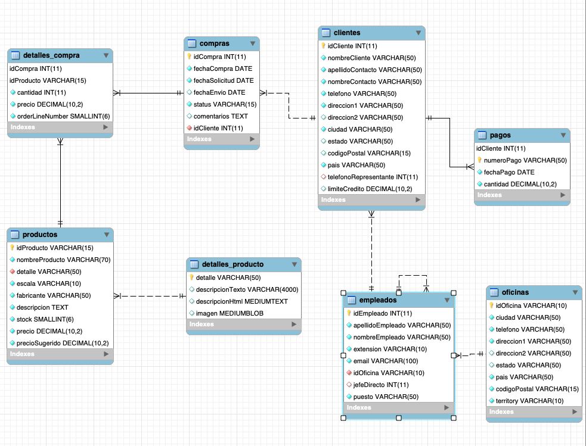

MySQL 101
Clase 2 Queries con Filtros
We work with Java
RECORDATORIO
-- SINTAXIS DE SELECTS
SELECT t.columna1, t.columna2, t.columna3 FROM tabla t WHERE condicion;La base que usaremos
Preparación.
Importe la Siguiente BD.
- Abra MySQL Workbench
- Liste las bases de datos:
show databases; - Use la base de datos creada:
use xsfRERFdc - Copie el contenido del script clase2.sql en el editor
- Ejecute el script
- Verifique que las tablas se hayan creado:
show tables
Consejo: para ver como se llaman las columnas use:
SELECT idProducto, nombreproducto, detalle, escala,
fabricante, descripcion, stock, precio, precioSugerido
FROM productos;
--Solución corta (Operador *)
SELECT * FROM productos;
Mostrar los resultados ordenados por cierta columna
SELECT t.columna1 FROM tabla t ORDER BY columna ASC/DESC;
Ordene los nombres de los empleados en orden ascendente:
SELECT nombreEmpleado FROM empleados
ORDER BY nombreEmpleado ASC;
Y si quiero un orden específico?
-- ORDEN DE LAS COLUMNAS EN UN ORDEN QUE YO DEFINO
SELECT * FROM compras ORDER BY field(status,
'In Process',
'On Hold',
'Cancelled',
'Resolved',
'Disputed',
'Shipped');
MySQL también puede hacer cálculos por ti:
-- OPERACIONES ARITMÉTICAS
SELECT idcompra, cantidad * precio
FROM detalles_compra;
Y si quiero un nombre más decente para mi resultado:
-- PRESENTACION DE LAS COLUMNAS
SELECT idcompra, cantidad * precio as subtotal
FROM detalles_compra;
FILTROS
Ejercicio
SELECCIONE los empleados que sean representantes de ventas (Sales Rep) muéstrelos ordenados por apellido,
SELECT * FROM empleados
WHERE puesto = 'Sales Rep'
ORDER BY apellidoEmpleado;
¿PUEDO PONER MÁS DE UNA CONDICIÓN?
Seleccione los empleados que sean representantes de ventas (Sales Rep) Y su oficina sea 1 muéstrelos ordenados por apellido
SELECT * FROM empleados
WHERE puesto='sales rep' AND idoficina = 1
ORDER BY apellidoEmpleado;
¿Y si quiero dos condiciones?
Use OR
Seleccione los empleados que sean representantes de ventas (Sales Rep)
SELECT * FROM empleados
WHERE puesto = 'Sales Rep' OR puesto = 'VP Sales';
EJERCICIO 1:
Seleccione todos los empleados de las oficinas 1, 2 y 3
SELECT * FROM empleados
WHERE idoficina=1 OR idoficina=2 OR idoficina=3;
--Otra forma
SELECT * FROM empleados WHERE idoficina IN (1,2,3);
EJERCICIO 2:
Seleccione los empleados que sean representantes de ventas
SELECT * FROM empleados
WHERE idoficina = 1 AND (puesto= 'VP Sales' OR puesto = 'Sales Rep');
EL OPERADOR LIKE
¿Qué pasa si no recuerdo el nombre, apellido o valor exacto de un campo?
El operador
Like podríamos traducirlo como: "parecido a" Ejemplo:
-- Empleados cuyo apellido termina en SON
SELECT * FROM empleados WHERE apellidoEmpleado LIKE '%son';
-- Empleados cuyo apellido empieza con bo
SELECT * FROM empleados WHERE apellidoEmpleado LIKE 'bo%';
-- Empleados cuyo apellido tiene la silaba ar
SELECT * FROM empleados WHERE apellidoEmpleado LIKE '%ar%';
¿Cómo puedo hacer consultas sobre un campo vacío?
Use el operador IS NULL
SELECT campo FROM tabla WHERE campo IS NULL
Operadores de Comparación
| Operador | Uso |
|---|---|
| = | Operador de igualdad |
| <> or != | Diferente |
| < | Menor que |
| > | Mayor que |
| <= | Menor o igual que |
| >= | Mayor o igual que |
Ejemplo. Seleccione los productos que su precio sea mayor a 50
SELECT * FROM productos WHERE precio > 50;
EJERCICIO.
Seleccione todos los empleados que
SELECT * from empleados where puesto <> 'Sales REp';
SELECT * from empleados where puesto != 'Sales REp';